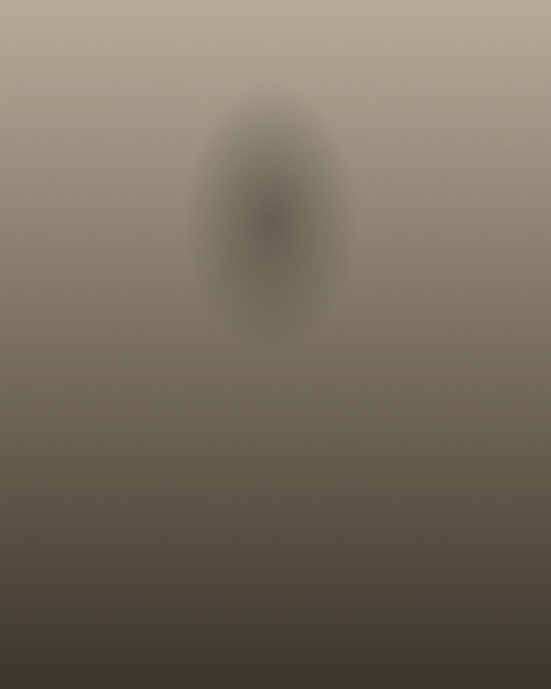
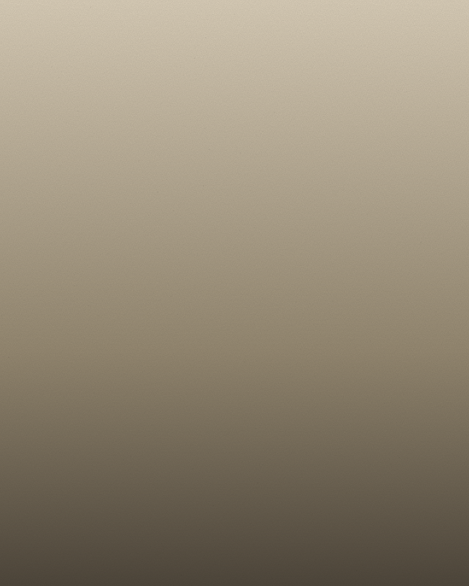

(Left: on book leave in Marfa. Right: the last good Tuesday.)
Jess was born and raised in Brooklyn, studied English at Oberlin, spent a year teaching creative writing to high-schoolers in Prague, worked as an editorial assistant at a small literary press in New York, and is now based in Portland, Oregon — where she lives with a very opinionated cat named Earl.
Her first short film, Softboiled, premiered at BAMcinemaFest in 2023. Her essays have appeared in The Rumpus, The Paris Review Daily, and Electric Literature. As a 2024 Tibor Fellow, she's currently at work on her debut novel, The Understudies, and an essay collection, Somewhere Between Places.
She co-hosts a small podcast with her writing partner called Bad Drafts, where they read the worst pages of their earliest drafts on the air. She believes most problems in writing are really problems in patience, and that the second draft is where the real book begins.
She's represented by Marin Kessler at the Kessler-Novak Agency. For anything else — say hello.
Let's make something strange together.